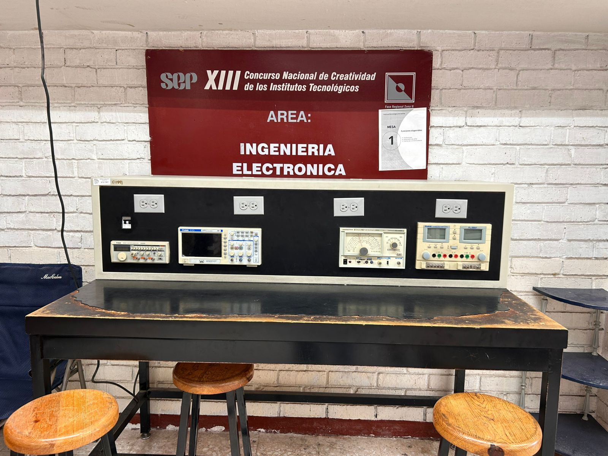
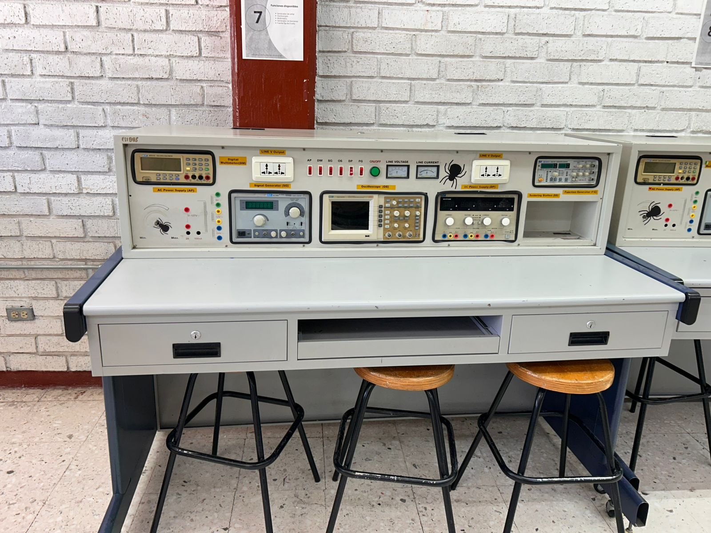

1. Identidad, Historia y Ubicación
Información General
Nombre de los laboratorios:
Electrónica Analógica, Electrónica Digital, Electrónica de Potencia y Laboratorio Virtual.
Carreras:
Ingeniería Eléctrica, Electrónica, Mecatrónica, Sistemas e Industrial.
Semestres:
Electrónica (1° semestre), Sistemas (4° semestre) e Industrial (4° semestre).
Capacidad máxima:
30 estudiantes por laboratorio, aproximadamente 120 alumnos considerando los cuatro laboratorios.
Historia y Ubicación
Motivo de creación:
Se creó por la necesidad de ampliar la oferta educativa del instituto y formar alumnos capacitados para el área industrial.
Actualizaciones:
Hace aproximadamente 8 años se renovó equipo con tecnología de última generación. Recientemente se adquirieron nuevos multímetros.
Ubicación:
Edificio de Electrónica, Área 3 del área de Ingenierías.
Acceso discapacidad:
Sí cuenta con acceso para personas con discapacidad.

2. Misión, Visión y Valores
Misión
Brindar el mejor servicio posible a los estudiantes, apoyando el desarrollo de prácticas que complementen los conocimientos adquiridos en el aula y fortaleciendo su formación profesional.
Visión
Formar estudiantes competitivos que cuenten con las habilidades y conocimientos necesarios para integrarse al sector industrial y tecnológico del país.
Valores
Respeto, armonía, compañerismo y trabajo en equipo, fomentando un ambiente de aprendizaje colaborativo dentro del laboratorio.
3. Equipo y Reglamento
Infraestructura
Equipos principales:
Multímetros, osciloscopios, generadores de funciones, fuentes de poder y semiconductores.
Software especializado:
Software utilizado para actualización de equipos de laboratorio.
Mantenimiento:
Se realizan mantenimientos preventivos periódicos. Los equipos dañados se envían con proveedores especializados.
Normativa
Reglas principales:
Mantener orden, limpieza y buena actitud dentro del laboratorio.
Prohibiciones:
Fumar, consumir alimentos, introducir líquidos o sustancias químicas.
Requisitos:
Presentar credencial vigente para solicitar o utilizar equipo del laboratorio.
Equipos del Laboratorio de Electrónica


4. Prácticas y Materias
Materias
Materias participantes:
Electrónica Analógica, Electrónica Digital y Electrónica de Potencia.
Proyectos finales:
Se realizan proyectos relacionados con el análisis y construcción de circuitos electrónicos.
¿Interdisciplinarias?:
Sí, requieren conocimientos básicos de electrónica y electricidad.
Dinámica de Prácticas
Tipo de prácticas:
Prácticas de medición, análisis de circuitos y detección de fallas en sistemas electrónicos.
¿Son obligatorias?:
Las prácticas son obligatorias para complementar los conocimientos teóricos.
5. Horarios
Atención
Horario oficial:
Lunes a viernes de 7:00 A.M. a 8:00 P.M.
¿Fines de semana?:
Solo cuando el docente lo considere necesario.
¿Requiere reservación?:
Sí. Los docentes deben agendar con el encargado los viernes para utilizar el laboratorio la siguiente semana.
Contacto
Jefe de departamento:
Ing. Felipe Manchorra
Encargado del laboratorio:
Vicente Saucedo Padilla
Correo:
vicente.sp@saltillo.tecnm.mx
Número de contacto:
8441222535